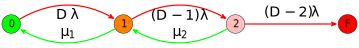
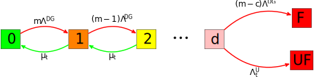

Modeling Data Durability and Availability
Outline
Acknowledgements:
Ian Davies, Mike Barrell, John Bent, and Iman Anvari
- Press F11 for full screen
- Ctrl +/- to fit the content into the browser
- Use arrow keys to navigate the slides
- Table of contents button on the left bottom
- Printable PDF:
- Recorded session:
-
Fragments: Enable or disable fragment transitions within slides
-
Modeling Failures
- Weibull Distribution
-
Erasure Coding(EC)
-
General formalism,
RAID Redundant Array of Inexpensive Disks5& 6
-
General formalism,
-
Hard Errors (
UREs UnRecoverable Errors)
- Modeling durability with UREs
-
Distributed Parity
-
Improving data durability with
ADAPT Autonomic Distributed Allocation Protection Technology
- Multi-Layer EC
- Improving durability with two layers of EC
- Availability
- Modeling data availability
- Appendix
-
MACH2 Exos® 2X14, Seagate’s Dual actuator driveandReMan ReManufacturing drives with head failures
Goals & Summary
Goals- Provide a quick review of available models to compute data durability,
- Present an accurate and rigorous model,
- Establish a common language to compute these metrics.
SummaryThe durability of data in storage systems is determined by physical device failure rates. A typical storage system has multiple storage devices, which significantly increases the likelihood of failures. In order to improve the reliability, data redundancy is added to the system so that it becomes possible to recover data on a failed storage device from the parities stored on the remaining healthy devices. For example, in the case of Redundant Array of Inexpensive Disks (RAID), adding one redundancy ensures data robustness to one failure, whereas adding two redundancies will provide robustness against two simultaneous failures[3]. The data durability can be further increased by implementing sophisticated erasure coding schemes[4]–[8] and also by prioritizing the recovery of critically damaged data stripes[9]. In all of these schemes, the durability critically depends on how fast the data on a failed device can be reconstructed to restore the redundancy.
-
The durability and availability of data can be predicted accurately with Markov Chains:
- Based on rigorous math, and verified with Monte Carlo simulations.
- Supports Distributed Parity, ReMan, UREs, Weibull failure modes, and multi-layer EC.
- Developed in collaboration with the CORTX architects & sales team.
-
Advanced features, such as Online ReMan, can be modeled too:
- We continue to work on modeling latest and greatest CORTX features.
Visualizing failure distributions
In the interactive plot below, \(\alpha\) and \(\beta\) values can be adjusted. The toggles on the right change the scales.![An interactive plot of Weibull distributions defined in Eqs.<span class='myeqref'> \@ref(eq:weipdf) </span>,<span class='myeqref'> \@ref(eq:weicdf) </span> and <span class='myeqref'>\@ref(eq:weihazard)</span>. Use the toggles for linear/log scales. <span class='plus'>... [+]</span> <span class='expanded-caption'> The vertical dashed lines mark the value $t=\alpha$, and the horizontal one on $F$ marks the value $0.63$. The $y$ axis can be transformed to $ln\left[-ln(1-F_{\alpha,\beta})\right]$, and the time axis can be transformed to $ln(t)$. The effect of $\beta$ on $F$ is best observed with the log time scale, and $y$ in the probability scale: notice how $F_{\alpha,\beta}$ becomes a line with the slope $\beta$. Selecting the log scale for time and linear scale for the $y$ axis, shows that the changing scale parameter $\alpha$ moves the functions horizontally while preserving their shapes.</span>](placeholder.png)
An interactive plot of Weibull distributions defined in Eqs. @ref(eq:weipdf) , @ref(eq:weicdf) and @ref(eq:weihazard). Use the toggles for linear/log scales. … [+]
A drive will contain \(N\) heads and other components. We will model the drive as a device with two competing failure modes, one of which is ReMan’able while the other is not.
- It is important to understand how the storage devices fail. Weibull is typically a good fit.
- No matter how reliable individual devices are, failures are inevitable.
Erasure Coding
![A brief timeline of the erasure coding. <span class='plus'>... [+]</span> <span class='expanded-caption'> Replication has very poor capacity efficieny. RAID5(6) provides protection against one(two) failure(s). Seagate enclosures can be used to declustered parity as well as erasure coding across network. Durability and availablity can be further improved by implementing Multi-layer erasure coding. Most of the method shown in this figure will be discussed in detail in this presentation. </span> Credit:John Bent](cortx.png)
A brief timeline of the erasure coding. … [+] Credit:John Bent
- The simplest way of creating redundancy is replication, but this has a very poor capacity efficiency.
- RAID 5 and Raid 6 introduce parities to protect data against device failures.
- Seagate enclosures supports declustered RAID6, which can be coupled with a top layer EC in CORTX to get the highest durability with best capacity efficiency.
RAID 5 & 6 (with URE)
A Symbolic representation of the RAID including URE failures. Use the input sliders to change the number of drives or the redundancy. … [+]
-
The red arrows represent drive failures. Rate is scaled with the total number of drives:
- \(\lambda\) is the failure rate per drive, and \(n\lambda\) is the total failure rate for \(n\) drives.
- The arrow denoted with \(h\) represents the data loss due to UREs- to be discussed in more detail later.
-
The green arrows represent repairs. Failed drives are replaced, and data is rebuilt.
- The repair time, \(1/\mu\), depends on capacity and DR. It may be as long as several days.
-
Data is lost when the system moves to the right-most state.
- Key metric: Mean Time to Data Loss (MTTDL): it is a function of \(n\), \(c\), \(\lambda\), \(\mu\), drive capacity and \({\rm UER}\).
Monte Carlo Simulation
//Nov 2020 contact Serkay Olmez for questions scr_path=Get Default Directory();scr_path=substr(scr_path,2,length(scr_path));scr_name = Current Window() << get window title; calc_reli=function({}, newname="Reli simulation "||substitute(substitute(MDYHMS(today()),"/","_"),":","_"); dtt=new table(newname,invisible(1)); dtt<< add rows(num_simulations*num_drives_per_system); eval(substitute(expr(dtt<<new column("sys_id",formula(1+Floor((Row()-1)/num_drps_)))),expr(num_drps_),name expr(num_drives_per_system))); eval(substitute(expr(dtt<<new column("drv_id",formula(Row()-Floor((Row()-1)/num_drps_)*num_drps_))),expr(num_drps_),name expr(num_drives_per_system))); dtt<<delete column(1); wait(1+log10(num_simulations)/2);:drv_id<<delete formula();:sys_id<<delete formula(); eval(substitute(expr(dtt<<new column("drv_failure_time",formula(Random Weibull(beta_,alpha_)))),expr(alpha_),name expr(alpha),expr(beta_),name expr(betav))); column("drv_failure_time")<<delete formula(); dtt << Sort( By(:sys_id,column("drv_failure_time")), Order(Ascending,Ascending), Replace Table); dtt<<new column("num_failures",numeric); dtt<<new column("num_max_failures",numeric); :num_failures[1]=1;:num_max_failures[1]=1;maxseen=1;toberecovered={}; for(rr=2,rr<=nrows(dtt),rr++, rr_time=:drv_failure_time[rr]; rr_m1_time=:drv_failure_time[rr-1]; if(:sys_id[rr-1]!=:sys_id[rr],:num_failures[rr]=1; toberecovered={};maxseen=1;:num_max_failures[rr]=1); if(:sys_id[rr-1]==:sys_id[rr], Insert Into( toberecovered,:drv_failure_time[rr-1]); tosubtracted=0; for(rc=nitems(toberecovered),rc>=1,rc--, if(:drv_failure_time[rr]-toberecovered[rc]>repair_time, tosubtracted++;remove from(toberecovered,rc)) ); :num_failures[rr]=:num_failures[rr-1]-tosubtracted+1; if(:num_failures[rr]>maxseen,maxseen=:num_failures[rr]); :num_max_failures[rr] =maxseen ); ); rc=1; //throw(); mm=1;rr=1;mms=1; big_failure_perc_table={}; for(mms=1,mms<=12/stepsize*max_year,mms++, mm=stepsize*mms; //do this quarterly to speed up month_tresh=365/12*mm; if (mod(mm, 5) == 0,caption("Status:"|| char(round(100*mm/(12*max_year)))|| "% "); wait(0); ) ; try(dtt<<delete column("filtered_num_max_failures")); Eval(Substitute(Expr(dtt<<new column("filtered_num_max_failures",formula(if(:drv_failure_time>_thres_,.,:num_max_failures)))), Expr(_thres_), month_tresh)); dts=dtt <<Summary(Group( :sys_id ), Max( :filtered_num_max_failures ),Link to original data table( 0 ),invisible(1)); column("Max(filtered_num_max_failures)")<<set name("max_in_frame"); :max_in_frame[dts<<get rows where(is missing(:max_in_frame))]=0; //filling in the missing rows- they had no failures failure_perc_table={};dts<<new column("system_failure",numeric); for(rr=1,rr<=nitems(redundancy),rr++, Eval(Substitute(Expr(:system_failure<<set formula(if(max_in_frame>_red,100,0))), Expr(_red), redundancy[rr])); :system_failure<<eval formula(); failure_perc_table[rr]=col mean(:system_failure) ); dts<<close window();big_failure_perc_table[mms]=failure_perc_table; ); caption(remove); dtt<<close window(); ); //////////////////////////////////////// clear log(); try(dtsum<<close window());try(dtt<<close window()); start_time=today(); max_year=5; AFRlist={25,31,38};repair_timelist={6};redundancy={1};num_drives_per_system_list={9}; AFRlist={0.5,1,2,5};repair_timelist={12,24,48,120,240};redundancy={0,1,2,3};num_drives_per_system_list={4,8,16,24}; AFRlist={2};repair_timelist={12,24,48,120,240};redundancy={0,1,2,3};num_drives_per_system_list={4,8,16,24}; AFRlist={2.5};repair_timelist={4};//days redundancy={0,1};num_drives_per_system_list={20}; betalist={1,1.25,1.5}; //AFRlist={0.2};repair_timelist={0.33}; num_drives_per_system_list={8}; stepsize=3; //in months dtsum=new table("Reli Summary", invisible(1)); dtsum<<new column("simulation_size");dtsum<<new column("total_num_of_drives");dtsum<<new column("redundancy"); eval(parse("dtsum<<new column(\!"AFR(%)\!")")); eval(parse("dtsum<<new column(\!"repair_time(days)\!")")); dtsum<<new column("time(months)");dtsum<<new column("system failure(%)"); dtsum<<new column("system_reli",formula(1- :Name( "system failure(%)" ) / 100 )); dtsum<<new column("MC_num_of_nines",formula(floor(-Log10( :Name( "system failure(%)" ) / 100 )))); dtsum<<new column("MC_num_of_nines_",formula(-Log10( :Name( "system failure(%)" ) / 100 ))); dtsum<<new column("simulation_duration"); dtsum<<new column("beta"); index=0; indexmax= nitems(AFRlist)*nitems(repair_timelist)*nitems(num_drives_per_system_list)*nitems(betalist); gridindex=0;bi=1;afrindex=1;repindex=1;numodindex=1; for(bi=1,bi<=nitems(betalist),bi++, betav=betalist[bi]; for(numodindex=1,numodindex<=nitems(num_drives_per_system_list),numodindex++, num_drives_per_system=num_drives_per_system_list[numodindex]; for(afrindex=1,afrindex<=nitems(AFRlist),afrindex++, for(repindex=1,repindex<=nitems(repair_timelist),repindex++, gridindex++; remaining_time=round((indexmax-gridindex)*(today()-start_time)/gridindex/60); caption(char(bi)||"_"||char(numodindex)||"_"||char(afrindex)||"_"||char(repindex)||" out of " ||char(nitems(betalist))||"_"||char(nitems(num_drives_per_system_list))||"_"||char(nitems(AFRlist))||"_"||char(nitems(repair_timelist))||" "||char(remaining_time)||" mins to go"); AFRmx=AFRlist[afrindex]; AFR=100*(1-(1-AFRmx/100)^(1/max_year)); repair_time=repair_timelist[repindex]; alpha=round(-365/log(1-AFR/100)); // this is in days num_simulations=4*10^Floor(7-LOG10(num_drives_per_system)); print("number of drives:"||char(num_simulations*num_drives_per_system)); //throw(); simstart=today(); calc_reli(); simend=today(); print(char(round(simend-simstart))||" seconds"); for(mms=1,mms<=12/stepsize*max_year,mms++, mm=stepsize*mms; //do this quarterly to speed up for(rr=1,rr<=nitems(redundancy),rr++, failure_perc_table=big_failure_perc_table[mms]; dtsum<<add rows(1);index++; column("redundancy")[index]=redundancy[rr]; column("time(months)")[index]=mm; column("system failure(%)")[index]=failure_perc_table[rr]; column("AFR(%)")[index]=AFR; column("repair_time(days)")[index]=repair_time; :total_num_of_drives[index]=num_drives_per_system; :simulation_size[index]=num_simulations; :simulation_duration[index]=round(simend-simstart); :beta[index]=betav; ); ); //throw(); newname=substitute(substitute(MDYHMS(today()),"/","_"),":","_"); dtsum<<save("C:\Users\451516\my_codes\erasure_coded_storage_system_analysis\EC reli MC simulation results_"||newname||".jmp"); ); ); ); ); dtsum<<new column("alpha",formula(round(-365.25/log(1-Name("AFR(%)")/100)))); dtsum<<new column("beta_sys",formula((:redundancy+1)*(:beta-1)+1)); dtsum<<new column("alpha_sys",formula( ((Name("repair_time(days)")^:redundancy)*(factorial(:total_num_of_drives)/(factorial(:total_num_of_drives-:redundancy-1) *factorial(:redundancy)))*(:beta^(:redundancy+1)/:alpha^(:beta*(:redundancy+1)))*1/(:beta_sys))^(-1/:beta_sys))); dtsum<<new column("theory_system failure(%)",formula(100*(1-Exp( -(365.25/:alpha_sys*:Name( "time(months)" ) / 12)^:beta_sys )))); dtsum<<new column("theory_system_reli",formula(1- :Name( "theory_system failure(%)" ) / 100 )); dtsum<<new column("theory_num_of_nines",formula(floor(-Log10( :Name( "theory_system failure(%)" ) / 100 )))); dtsum<<new column("theory_num_of_nines_",formula(-Log10( :Name( "theory_system failure(%)" ) / 100 ))); :redundancy<<modeling type(nominal); newname=substitute(substitute(MDYHMS(today()),"/","_"),":","_"); notein="This data table is created by "||scr_path||scr_name||".jsl on"||char( As Date(Today());); dtsum << New Table Variable( "Notes",notein ); dtsum<< new column("Notes"); :Notes[1]=notein; //this table will go into CSV. Just add a column to keep the info dtsum<< new column("Date"); thisdate=substitute(substitute(MDYHMS(today()),"/","_"),":","_"); :Date[1]==thisdate; dtsum<<save("C:\Users\451516\my_codes\erasure_coded_storage_system_analysis\EC reli MC simulation results generic beta "||newname||".jmp"); duration=char(floor((today()-start_time)/60))||" minutes"; Bivariate( Y( :MC_num_of_nines_ ), X( :theory_num_of_nines_ ), Fit Special( Intercept( 0 ), Slope( 1 ), {Line Color( {212, 73, 88} )} ), SendToReport( Dispatch( {}, "1", ScaleBox, {Label Row( {Show Major Grid( 1 ), Show Minor Grid( 1 )} )} ), Dispatch( {}, "2", ScaleBox, {Label Row( {Show Major Grid( 1 ), Show Minor Grid( 1 )} )} ), Dispatch( {}, "Bivar Plot", FrameBox, {Row Legend( redundancy, Color( 1 ), Color Theme( "JMP Default" ), Marker( 0 ), Marker Theme( "" ), Continuous Scale( 0 ), Reverse Scale( 0 ), Excluded Rows( 0 ) )} ) ) )
The comparison of theory vs Monte Carlo results with various input parameters. Number of nines is defined in Eq. @ref(eq:nondefinition) where flooring is omitted. … [+]
Distributed Parity (ADAPT)
- Distributed raid (dRAID) uses all the drives in the pool to store data and parities.
- Rebuild is done by reading from all drives in the pool in parallel.
- ADAPT prioritizes the repair of critically damaged stripes[9]. This is the main reason for reli gain.
Venn Diagram of overlaps of 3 failures with 53-drive pool and EC size of 10.
An approximate Markov chain for distributed parity of pool size \(D\) and redundancy \(2\). … [+]
-
Consider a system of pool-size \(D\) and EC size \(N\), and redundancy \(c\).
- The overlaps are calculated for \(D=53\) and \(N=8+2\).
- Geometric overlap areas scale with powers of \(N/D\).
-
Recovery rates: \(\mu_1 \propto D\) and \(\mu_2\propto D^2,\) failure rate: \(\propto D\).
- Increase in failure rate cancels with recovery speed up for \(c=1.\)
- Reli will benefit from ADAPT only if \(c\geq2\).
-
ADAPT Reli can be expressed in terms of its RAID counterpart:
- \({\rm MTTDL}_{{\rm dRAID}}=\left[\frac{D}{N}\right]^{\frac{c(c-1)}{2}} {\rm MTTDL}_{{\rm RAID}}\).
- For \(D=50\), \(N=10\), and \(c=2\): Adapt reli is 5x better than RAID6 reli.
Visualizing the damage
A Sankey Diagram of stripe degradation percentages with +2 Erasure coding. Hover on the image to see the numbers. … [+]
Modeling Multi-Layer Erasure Coding
The overall data durability can be improved by implementing another layer of erasure coding. Top layer is composed of already erasure coded sub-elements.
![Left: the first layer of the overall erasure coding of size $n$ and $c$ reduncies.<br> Right: A block diagram representation of the erasure coded system as a single element. <span class='plus'>... [+]</span> <span class='expanded-caption'> The system will lose data when $c+1$ drive failures or $c$ drive failures and URE(s) are encountered. These two cases are characterized by the rates $\Lambda^{\rm DG} =\Lambda^{\rm DG}(c)=\left(\frac{\lambda}{\mu}\right)^c \frac{\lambda n! }{(n-c-1)!}$ and $\Lambda^{\rm U} =\Lambda^{\rm U}(c)=h_{n-c}\Lambda^{\rm DG}(c-1)$</span>](presentation_files/figure-revealjs/markovibox-1.svg)
Left: the first layer of the overall erasure coding of size \(n\) and \(c\) reduncies.
Right: A block diagram representation of the erasure coded system as a single element. … [+]Calm on the surface, but always paddling like hell underneath. A lot of data paddling inside the enclosure, but from outside, it is just a very reliable petabyte drive.
Top layer EC of size \(m\) and \(d\) reduncies built with self-erasure coded elements.
\[\begin{eqnarray} \frac{1}{{\rm MTTDL}^{\rm t}_d}&=&\frac{1}{{\rm MTTDL}^{\rm t}_{d,{\rm DG}}}+\frac{h^{\rm t}_{m-d}}{{\rm MTTDL}^{\rm t}_{d-1,{\rm DG}}}\nonumber \end{eqnarray}\]
\[\begin{eqnarray} {\rm MTTDL}^{\rm t}_{d,{\rm DG}} &=&\left(\frac{\mu_{\rm t}}{ \Lambda^{\rm DG}}\right)^d \frac{(m-d-1)!}{ \Lambda^{\rm DG} m!},\nonumber \end{eqnarray}\] \(h^{\rm t}_{m-d}=1-(1-{\rm UER})^{(n-c)(m-d)C}\) probability of URE(s).
\[\begin{eqnarray} \frac{1}{{\rm MTTDL}^{\rm t}_d}&=&\frac{1}{{\rm MTTDL}^{\rm t}_{d,{\rm DG}}}+\frac{h^{\rm t}_{m-d}}{{\rm MTTDL}^{\rm t}_{d-1,{\rm DG}}} \end{eqnarray}\]
\[\begin{eqnarray} {\rm MTTDL}^{\rm t}_{d,{\rm DG}} &=&\left(\frac{\mu_{\rm t}}{ \Lambda^{\rm DG}}\right)^d \frac{(m-d-1)!}{ \Lambda^{\rm DG} m!}, \end{eqnarray}\] \(h^{\rm t}_{m-d}=1-(1-{\rm UER})^{(n-c)(m-d)C}\) probability of URE(s)
during the critical top layer repairs.- 16+2+Adapt (53-drive-pool) & 7+1 CORTX gives ~13 nines at the overall 73% capacity efficiency(27% overhead).
- ~12 nines can be reached with an 8+5 single layer EC at 62% capacity efficiency (38% overhead).
Durability with Mach2

A mock up MACH2 drive with two actuators.
- The reliability of RAID critically depends on the speed of the recovery.
- MACH2 doubles the data transfer \(\implies\) 2x/4x reliability improvement for RAID5/6.
An interactive plot showing the gains with MACH2. … [+]
- Multi-Layer EC
-
Improving data durability with